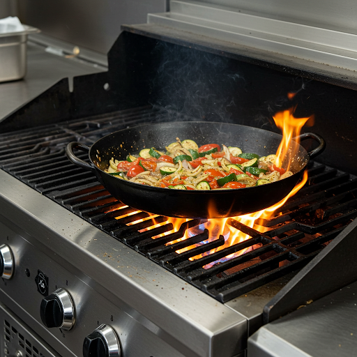

<link rel="stylesheet" href="style.css">
<main class="container">
        <h2>Ready for the Formal Assessment?</h2>
        <p>The formal assessment will test your ability to quickly and accurately:</p>
        <ul>
            <li>Identify common kitchen hazards.</li>
            <li>Select the correct safety warning term in English or Spanish.</li>
            <li>Understand heard safety warnings.</li>
        </ul>
        <p>Remember, you need to succeed in <strong>at least 4 out of 5 scenarios</strong> to demonstrate mastery.</p>

        <p>If you feel prepared, proceed to the assessment. If not, return to the learning resources.</p>

        <a href="assessment_formal.html" class="button-link">Start Formal Assessment</a>
        <a href="learning_resources.html" class="button-link secondary">Review Learning Resources</a>
    </main>

    <main class="container">
        <h2>Formal Assessment: Exchange Safety Warnings</h2>
        <p><strong>This is the formal assessment for mastery.</strong> Respond accurately to the 5 scenarios presented.</p>
         <div class="simulation-area">
            <p><em>(Placeholder: Formal, timed simulation loads. No hints. Records performance.)</em></p>
              <p><strong>Scenario 1 of 5:</strong> A colleague is reaching towards this pan. What do you say in Spanish?</p>
              <button>A) ¡Piso Mojado!</button> <button>B) ¡Cuidado!</button> <button>C) ¡Caliente!</button>
              <br><br>
             <button id="formal-assess-start">Start Assessment</button> <a href="assessment_results.html" class="button-link" style="display: none;" id="submit-assessment-link">Submit & View Results</a> </div>
         <p><small>Once submitted, your results will determine mastery status for this competency.</small></p>
    </main>
    <script src="js/script.js"></script>